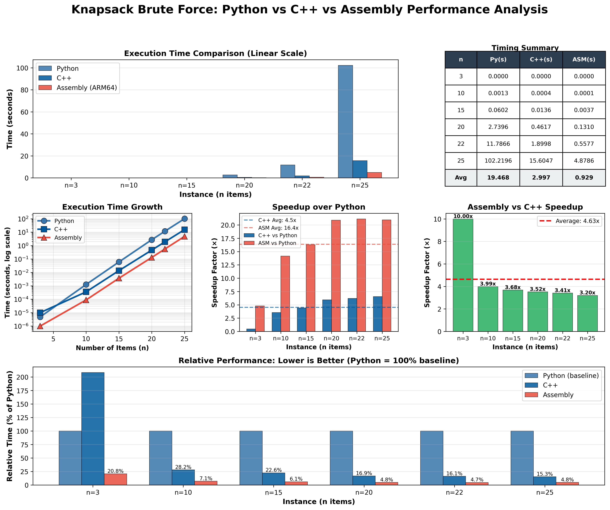
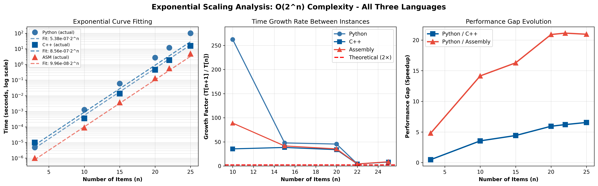
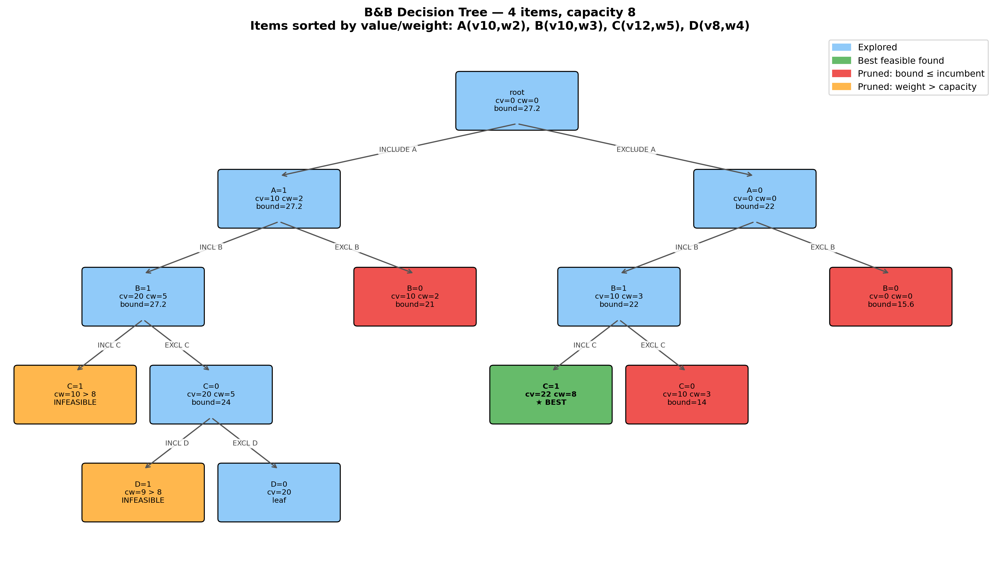
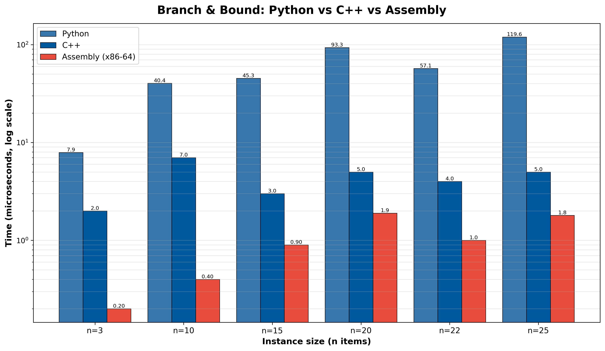
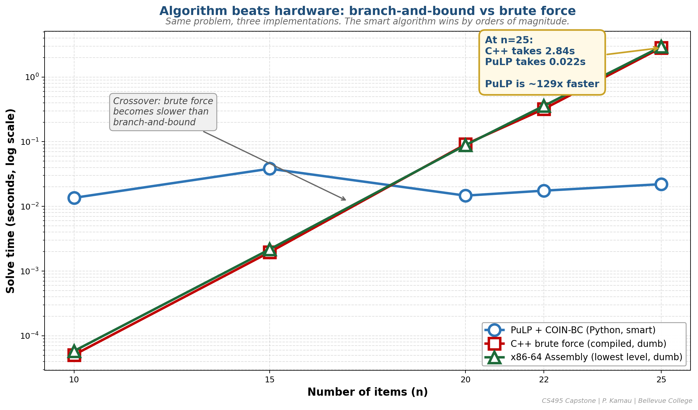

The 0-1 Knapsack Problem
Given n items with weights wi and values vi, and a knapsack of capacity C — pick a subset that maximizes total value without exceeding capacity.
maximize Σ vᵢ · xᵢ
subject to Σ wᵢ · xᵢ ≤ C
xᵢ ∈ {0, 1}Why it matters
- Canonical NP-hard problem
- Same family as driver-to-region, truck loading, budget allocation
- Solvers like PuLP/CBC use B&B under the hood
A Concrete Tiny Instance
4 items, capacity 8. Which subset wins?
Sorted by value/weight ratio. 16 subsets total at n=4. Manageable by hand — but at n=25, that's 33 million subsets.
Hold this in your head — we'll trace the B&B tree on this exact instance shortly.
Baseline: Brute Force
Enumerate every subset — 2n of them.
for mask in range(1 << n): # 2^n iterations
w, v = 0, 0
for i in range(n):
if mask & (1 << i):
w += weights[i]
v += values[i]
if w <= capacity and v > best:
best = vCorrect by construction — but doubles in cost every time you add one item.
Brute Force — Python vs C++ vs Assembly

Exponential growth in all three languages. At n=25: Python 102 s, C++ 15.6 s, ASM 4.9 s. Faster language helps — but you can't out-engineer 2n.
Exponential Scaling — Quantified

Left: log-linear fits confirm T ∝ 2n in all three languages. Middle: empirical growth factor T(n+1)/T(n) hugs the theoretical 2× line. Right: the language gap (Python/C++, Python/ASM) widens with n — constant factors compound on exponential work.
Branch & Bound — The Idea
- Branch. At each item, recurse on include vs exclude.
- Bound. Compute an upper bound on the best the subtree could produce.
- Prune. If bound ≤ current best, skip the whole subtree.
B&B Decision Tree — On Our Tiny Instance

Out of 16 possible subsets, B&B visits 9 nodes — 3 pruned by bound, 2 by infeasibility. The best feasible solution B+C = 22 is found early and powers the rest of the pruning.
The Bound: LP Relaxation
Relax xi ∈ {0,1} → xi ∈ [0,1]. The fractional knapsack has a closed-form greedy answer.
def upper_bound(level, cur_weight, cur_value):
bound = cur_value
rem = capacity - cur_weight
for i in range(level, n):
if w[i] <= rem: # take the whole item
bound += v[i]
rem -= w[i]
else: # take a fraction of the next item
bound += v[i] * rem / w[i]
break
return boundItems already sorted by value/weight, so this greedy fill is the LP optimum. Floor of the bound stays valid for integers — that's why ASM stays in pure integer math, no FPU.
Same Algorithm, Three Languages
void branch(int level, int cw, int cv) {
if (cv > best) { best = cv; ... }
if (level == N) return;
if (upper_bound(level, cw, cv) <= best) return; // PRUNE
if (cw + W[level] <= CAP) // INCLUDE
branch(level+1, cw + W[level], cv + V[level]);
branch(level+1, cw, cv); // EXCLUDE
}Python and C++ are line-for-line equivalent.
The x86-64 ASM uses the Win64 ABI and recurses via call/ret —
r12/r13 hold the sorted arrays, ebx holds the running incumbent, the bound is computed inline in pure integer math.
Branch & Bound — Python vs C++ vs Assembly

All three implementations finish in microseconds across n = 3 … 25. C++ averages ~13× faster than Python; hand-tuned x86-64 ASM averages ~52× over Python and ~3× over C++.
Connection to My Capstone
Logistics ILP
- Driver-to-region binary ILP
- Modeled in PuLP, solved with CBC
- CBC is a Branch & Bound solver
- Knapsack is its didactic sibling
LLM Track
- Hand-built solvers (this work) vs LLM-generated code
- Knapsack is the right testbed: small, well-defined, has ground truth
- Brute-force ↔ B&B comparison shows the algorithmic gap an LLM must learn to close
Where B&B Fits in the Capstone

Production track and research track both pass through the same algorithm family.
Algorithm Beats Hardware

Three implementations, same problem. At n=25, PuLP/CBC (B&B) is ~129× faster than C++ brute force and ~580× faster than x86-64 ASM brute force. A smarter algorithm in a slower language beats brute force in the fastest one.
Are the Solvers Actually Correct?
Benchmark numbers only mean something if the answer is right. The test suite cross-checks four independent implementations against each other:
- Known-answer tests — PuLP & B&B both return value=11 (PLAN-v1) and value=598 (disaster relief).
- Cross-solver agreement — PuLP, B&B, and brute force all agree on the canonical instance, with each solution re-checked for feasibility.
- Random-instance fuzzing — 50 random instances (n=1..12, seeded). B&B must match brute force on every one. Brute force is the oracle: correct by exhaustive enumeration.
- Solution invariants — for every returned solution: indices distinct, weight ≤ capacity, reported value = Σ values of selected items.
tests/test_knapsack.py ............................. 9 passed in 0.23s
test_all_solvers_agree_on_canonical_instance PASSED
test_bb_matches_brute_force_on_random_instances PASSED (50 random instances)Takeaways
- Brute force is a useful baseline — and a clear demonstration of why we need smarter algorithms.
- B&B uses an LP-relaxation bound to prune the search tree: correct, optimal, dramatically faster.
- Same algorithm in 3 languages isolates language overhead from algorithm overhead — the speedups multiply independently.
- Connection: the ILP solvers I use for logistics assignment are B&B under the hood. Understanding B&B = understanding the tools.
- Verified: 9-test pytest suite — known answers, cross-solver agreement, 50 random instances against the brute-force oracle, plus per-solution feasibility checks.
Questions?